Short explainers, all in one house style: a 16-bit program, running in a Win95 window, drawing voxel diagrams, photographed off a green-tinted CRT. One medium, not four — every frame passes through the same four layers in the same order. Vertical 9:16, because that is where they get watched. Every video is numbered and filed under at most two tags. Most are one-offs; where three of them answer one question between them they are marked as a series, and each part still stands on its own.
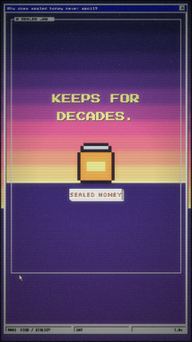
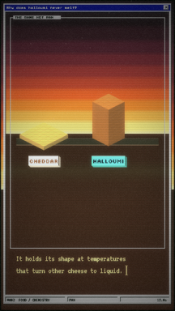
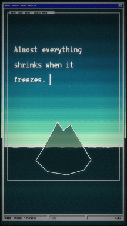
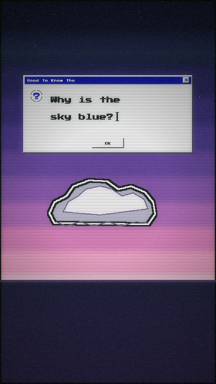
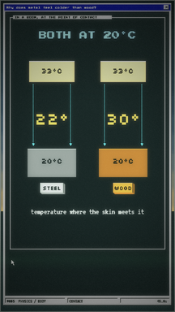
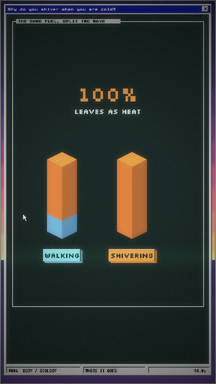
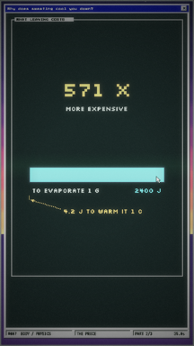
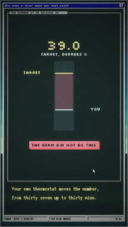
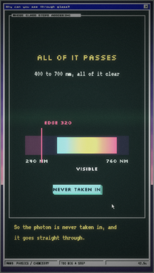
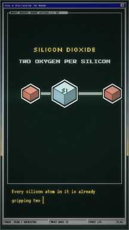
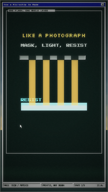
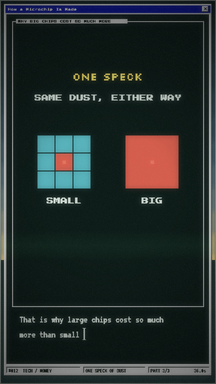
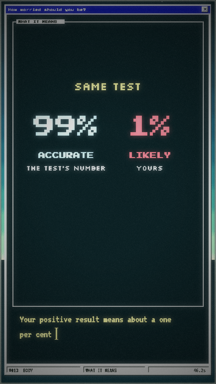
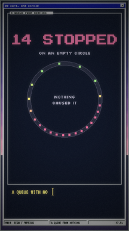
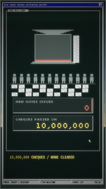
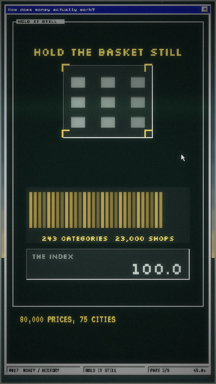
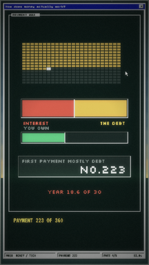
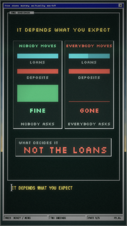
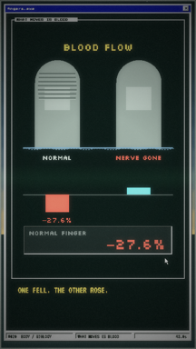
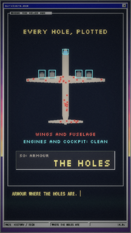
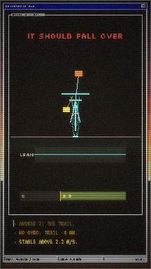
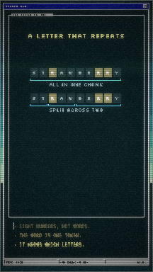
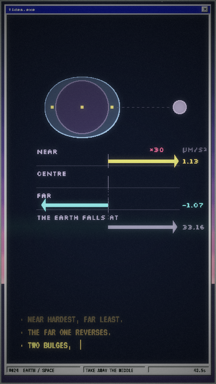
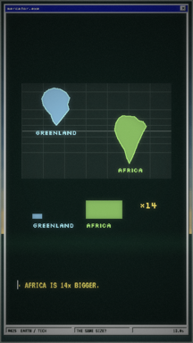
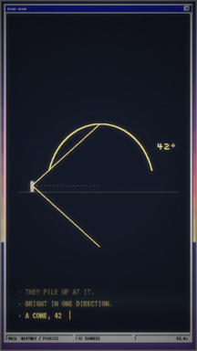
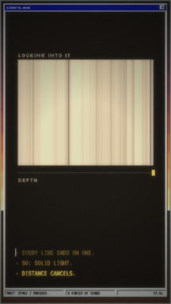
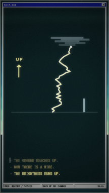
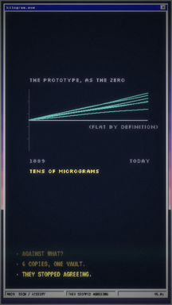
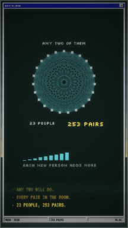
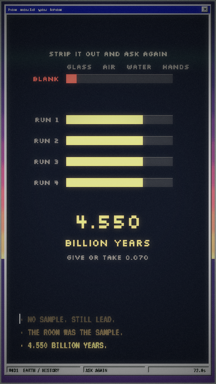
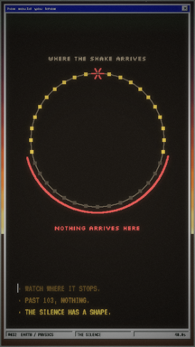
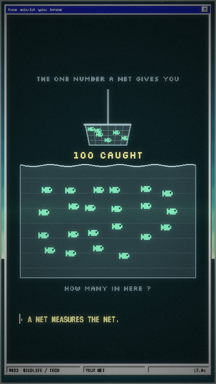
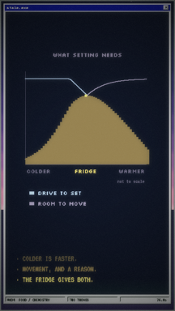
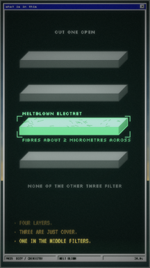
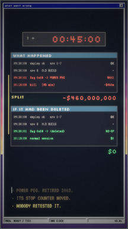
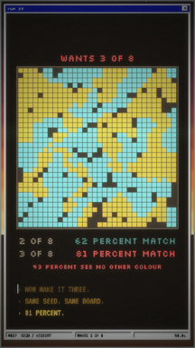
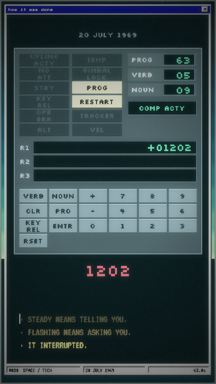
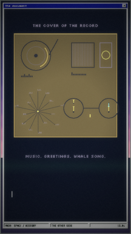
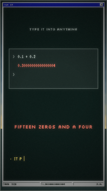
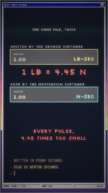
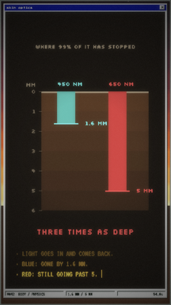
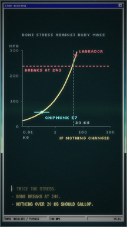
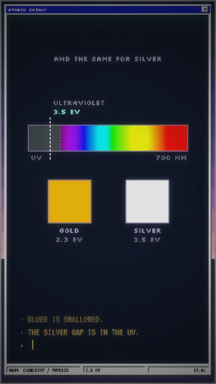
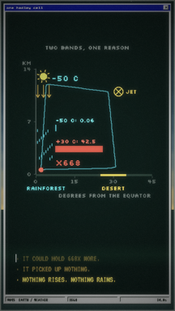
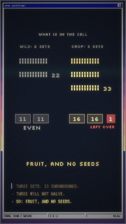
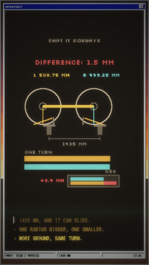
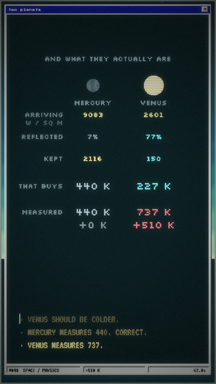
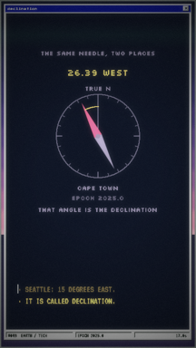
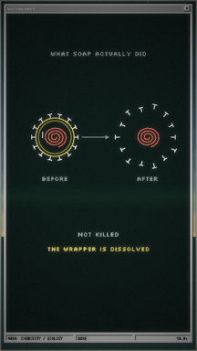
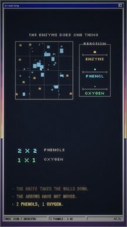
The frame. 2px bevels, navy title bar, group boxes, status bar, dotted arrows, the cursor.
from Win95 DesktopInside the client area. Banded dithered sky, hand-placed pixels, sprites, Press Start 2P lettering.
from 16-Bit Pixel OdysseyAnything 3D or quantitative. Charts and props as isometric cube stacks, three-tone faces, AO in the creases.
from Voxel DioramaFinishing pass over the whole composite. Scanlines, bloom, vignette, grain, slight green lift.
from Phosphor Terminal